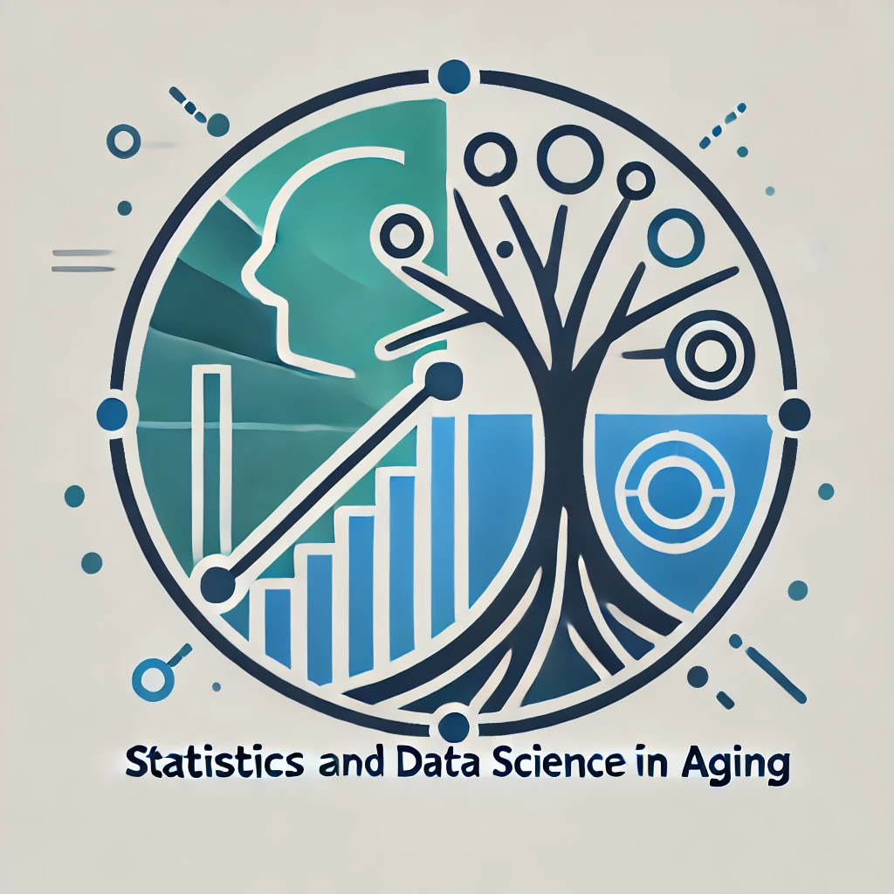

| Date | Time | Speaker | Registration/talk links |
|---|---|---|---|
| 8/27/2025 | 1-2pm ET/12-1pm CT/11am-12pm MT/10-11am PT | Tianying Wang, PhD; Owen Li, PhD Student; Molly Ehrig, MS | Zoom |
| 9/8/2025 | 12-1pm ET/11am-12pm CT;10-11am MT/9-10am PT | Pulkit Khandelwal, PhD; Boyi Hu, PhD Candidate; Julia Gallini, PhD Candidate | Zoom |
| 10/29/2025 | 1-2pm ET/12-1pm CT/11am-12pm MT/10-11am PT | Xuexin Yu, PhD; Margaret Gacheru, PhD; Matthew R. Scott, PhD Candidate | Zoom |
| 11/3/2025 | 12-1pm ET/11am-12pm CT;10-11am MT/9-10am PT | Jiachen Chen, PhD Candidate; Alessandra Pescina, MS; Deependra Kaji Thapa, PhD | Zoom |